JetRacer Kit Carbon Edition Eシリーズ
部品リスト（BOM）
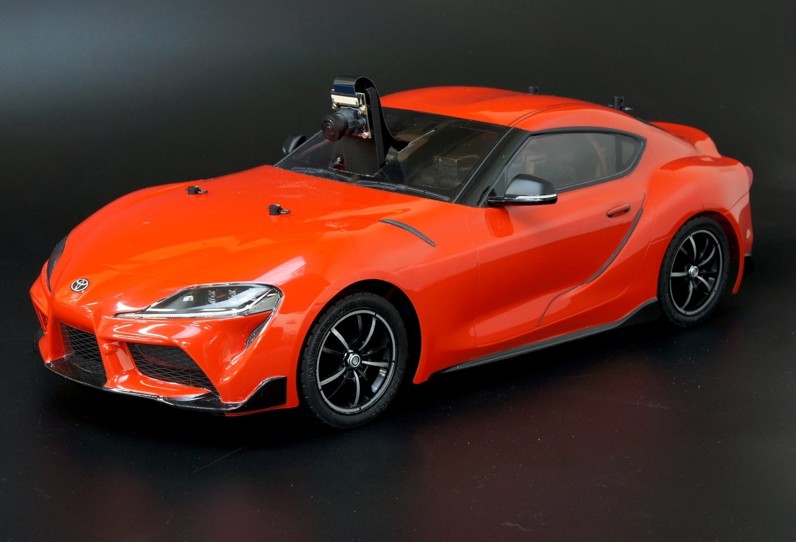
完成例：JetRacer Kit GRスープラボディ装着車
【対象モデル】
| コード番号 |
|---|
| JR1-S-C-E |
| JR1-B-C-E |
| JR1-NV-C-E |
| JR1-BU-C-E |
※JetsonNanoなしモデル（JR1-B-C-E）はJetson Nano開発者キットは付属しません。
※車体レスモデル（JR1-NV-C-E）は、RCカー本体 TT-02 XBプロは付属しません。
※組み立てキットモデル（JR1-BU-C-E）は、RCカーの組み立てが必要です。
JetRacer Carbon Edition JR1-S-C-E 内容物
| 写真 | 部品 | 個数 |
|---|---|---|
 |
RCカー本体 タミヤ TT-02 XBプロ エキスパートビルド ※完成品 ※タミヤ 1/10RC XB トヨタ GRスープラ (TT-02シャーシ) レッド タミヤ 1/10RC XB トヨタ GR 86 (TT-02シャーシ) ホワイト タミヤ 1/10RC XB トヨタ GR 86 (TT-02シャーシ) レッド タミヤ 1/10RC XB トヨタガズーレーシングWRT/ヤリス WRC（TT-02シャーシ） タミヤ 1/10RC XB NSX（TT-02シャーシ） タミヤ 1/10RC XB マツダ MAZDA3 (TT-02シャーシ) タミヤ 1/10RC XB フォード マスタング GT4 （TT-02シャーシ） のいずれかになります。 ※車種は選べません。 JR1-NV-C-E（車体レスモデル） は、付属しません。 ※写真はGRスープラの場合 |
１セット |
| 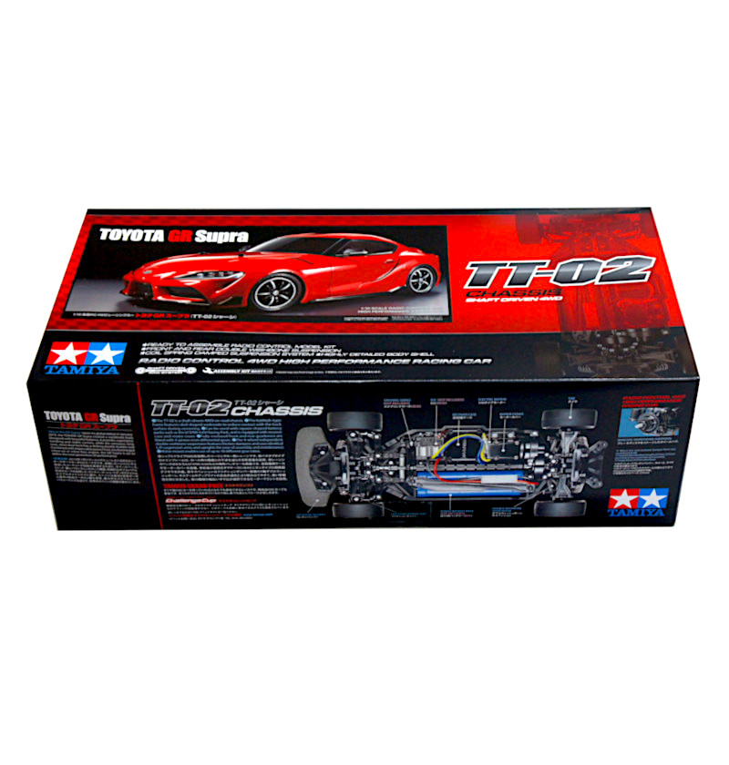 | RCカー本体(BUモデル 組み立てキットの場合) タミヤ TT-02 シャーシ 組み立てキット ※組み立て、塗装必要 タミヤ 1/10RC トヨタ GRスープラ (TT-02シャーシ) タミヤ 1/10RC トヨタ GR 86 (TT-02シャーシ)※塗装済み タミヤ 1/10RC トヨタガズーレーシングWRT/ヤリス WRC（TT-02シャーシ） タミヤ 1/10RC NSX（TT-02シャーシ） タミヤ 1/10RC マツダ MAZDA3 (TT-02シャーシ) タミヤ 1/10RC フォード マスタング GT4 （TT-02シャーシ） のいずれかになります。 ※車種は選べません。 ※JR1-NV-C-E（車体レスモデル） は、付属しません。 ※RCカーの組み立てが必要です。 ※塗料、接着剤は含まれておりません。 ※写真はGRスープラの場合 |
１セット |
| ※組み立てキットのみに付属 タミヤ ファインスペック２．４G 電動RCドライブセット 送信機 スピードコントローラ 受信機 サーボ ７．２Ｖバッテリー バッテリー充電器 45053 ※日本国内専用 送信機用単三アルカリ電池推奨 |
１セット | |
| 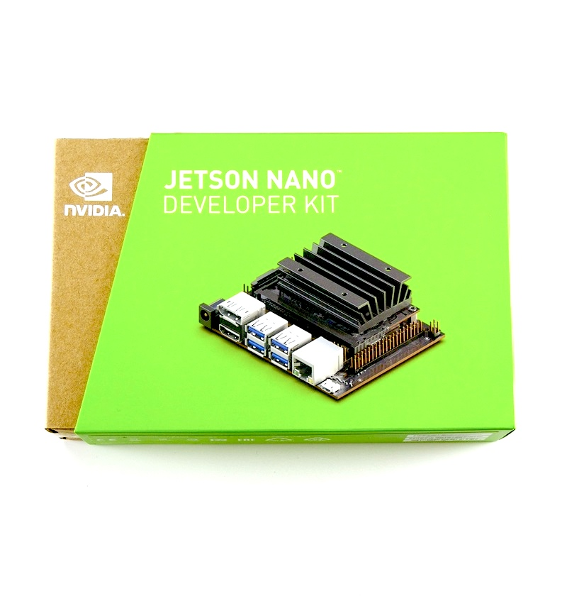 | Jetson Nano 開発者キットB-01 ※本体アップデートのため開封済みでございます。ご了承ください。 ※JR1-B-C-E（Jetson Nanoなしモデル）は付属しません。 |
１台 |
| 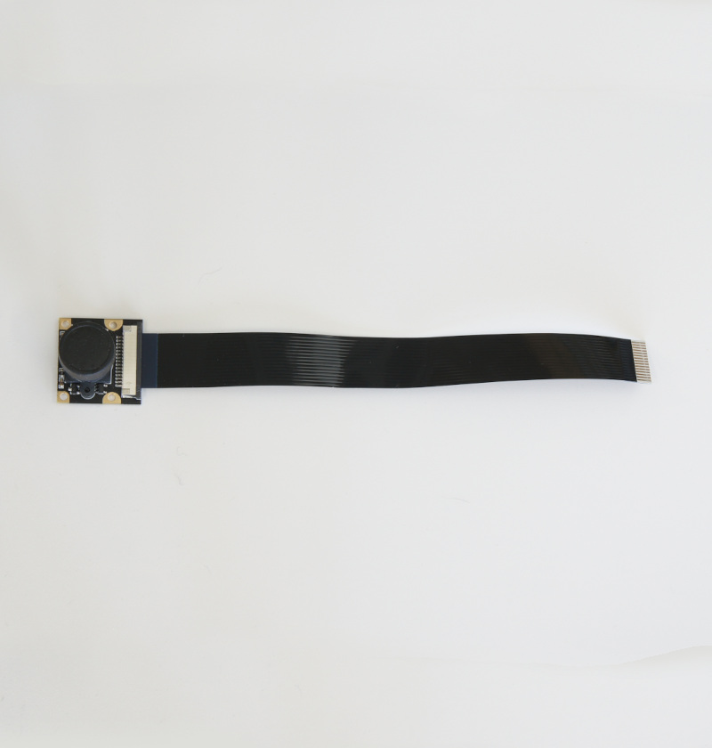 | CAM026 IMX219-160° ケーブル 150mm |
１個 |
| 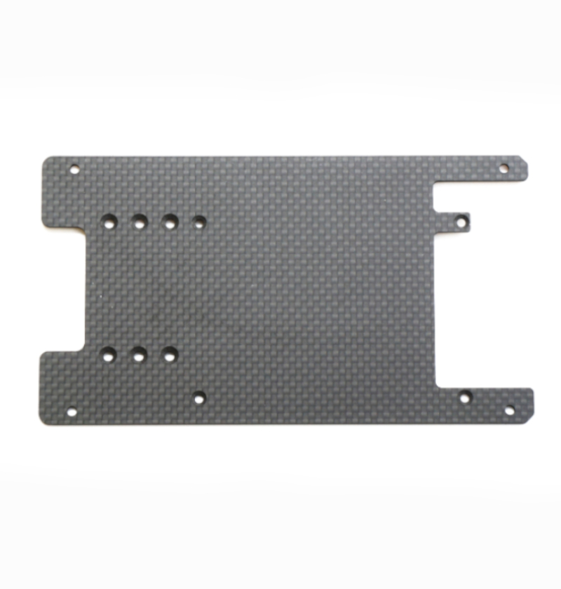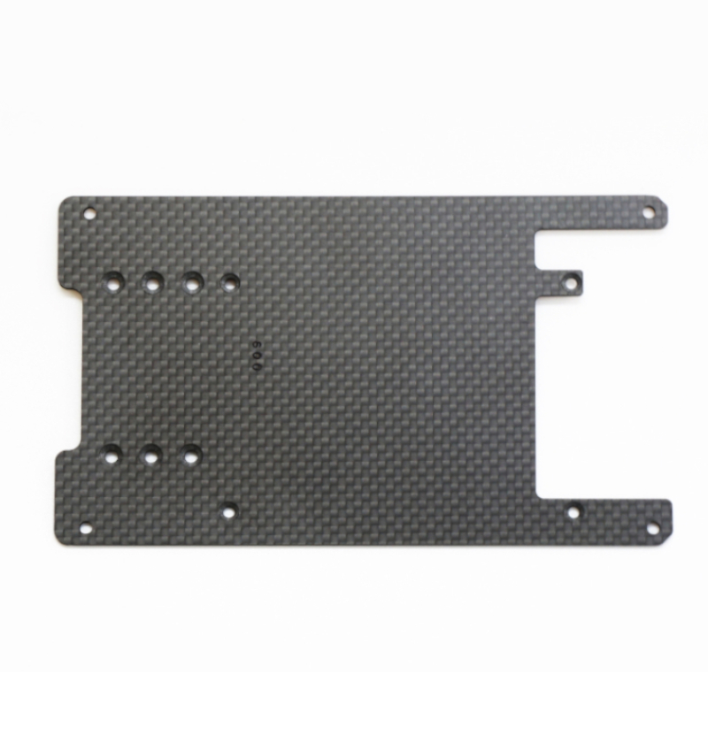 | 拡張ボディ カーボンアッパーパネル ※上下いずれかになります。 ※車体レスモデル(JR1-NV-C-E)はセット (上)通常パネル (下)NSX専用パネル |
１枚 |
 |
拡張ボディ カーボンロワーパネル | １枚 |
 |
Wi-Fi支持パーツ 材質:FR-4 Rev6 |
１個 |
| 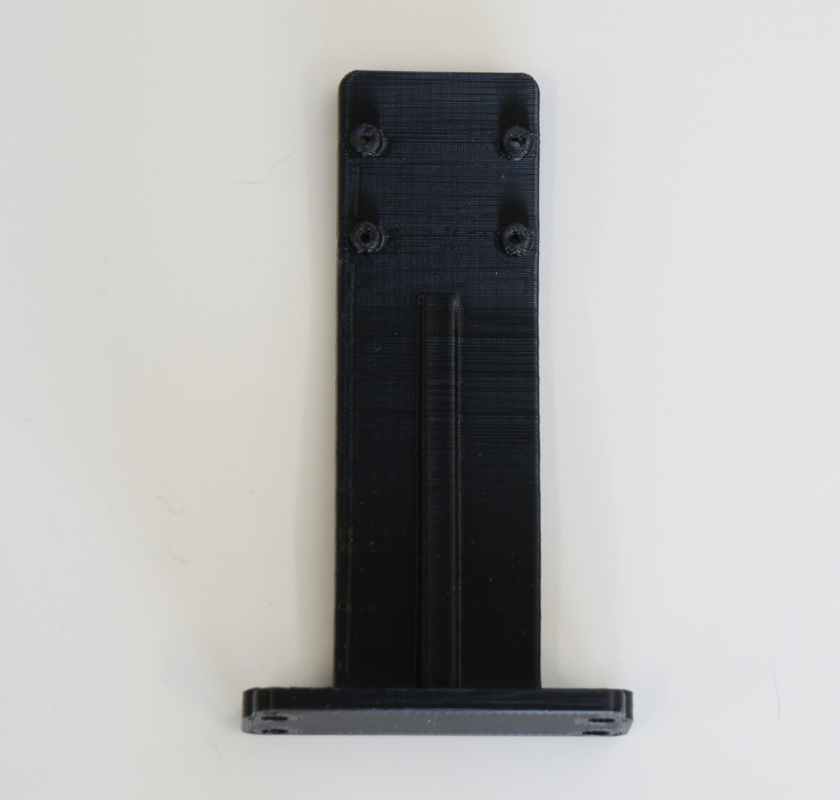 | 拡張ボディ カーボンエディション用カメラマウント | １個 |
 |
皿ネジM3×15・・・・4 皿ネジM3×10・・・・2 ナット M3・・・・6 六角穴付きボルトセルフタッピングネジM2×5・・・・6 |
１袋 |
 |
拡張ボディ カーボンエディション用LEDマウント（Rev4） | １個 |
| 樹脂六角スペーサー（黒色）M3×18・・・・4 皿ネジM3×10・・・・4 ナット M3・・・・4 |
１袋 | |
| 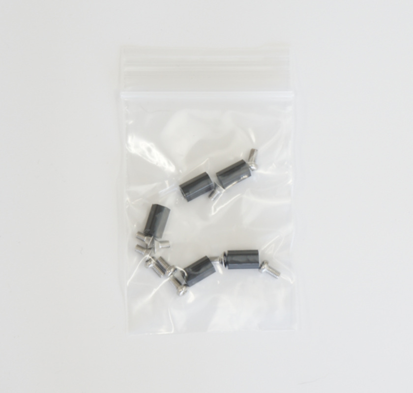 | 樹脂六角スペーサー(黒)M2.6×10・・・・4 皿ネジM2.6×5・・・・4 なべネジM2.6×5・・・・4 |
１袋 |
 |
FaBo #612 コントローラーボード Rev2.0.23 または、Rev2.0.28,Rev2.0.29 |
１枚 |
| 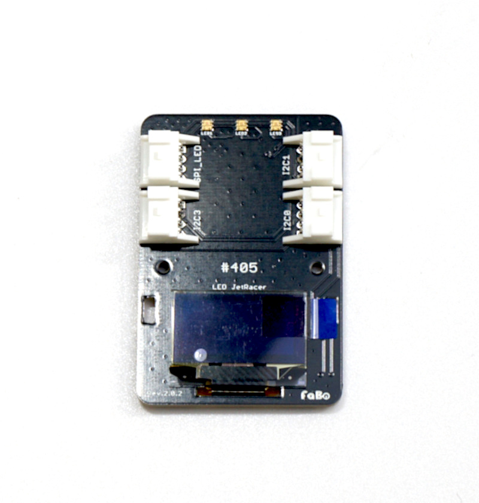 | FaBo #405 Color LEDボード （OLED付） 0.96インチ青色OLED表示 I2C端子3個、LED用SPI入力端子1個 |
１枚 |
 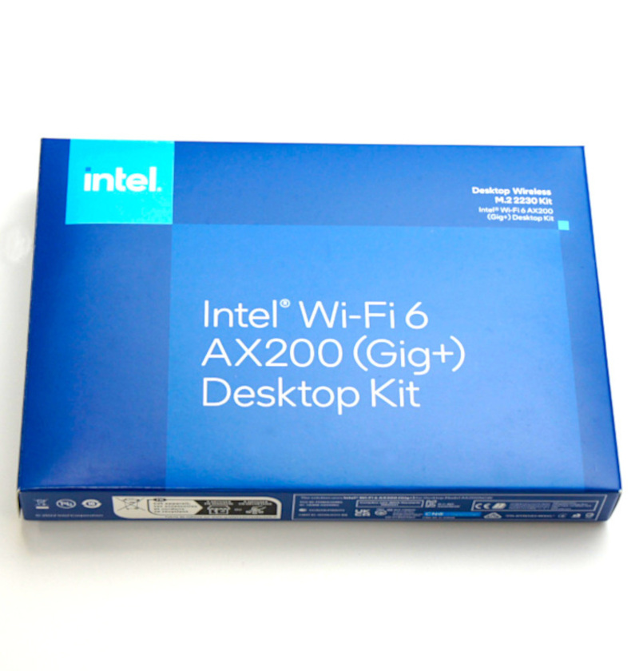 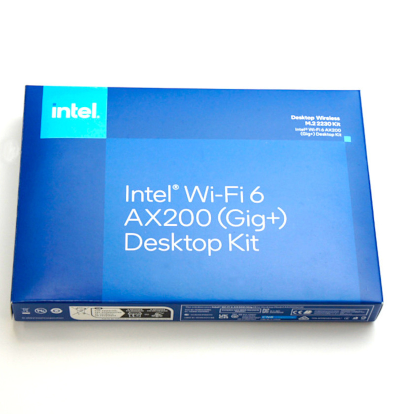 |
Intel Dual Bandwireless-AC 8265 Desktop Kit または、Intel AX200.NGWG.DTK ※AX200は、初期設定が必要になります。 ※上下いずれか |
１個 |
| 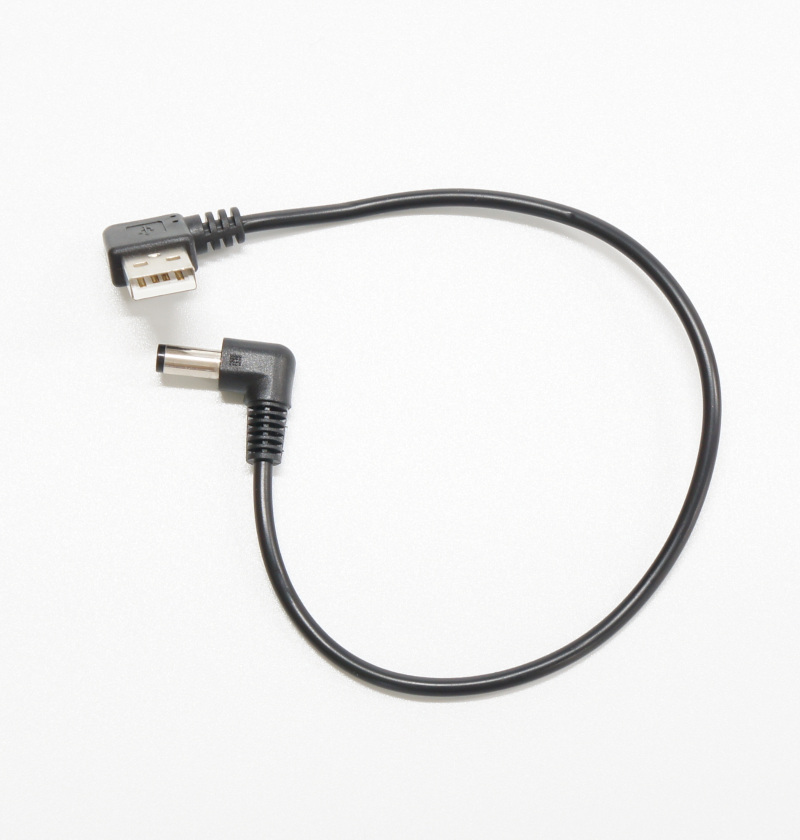 | 電源用USBケーブル 標準A-DCプラグ（A左向き、DC 2.1mm) 0.2m | １本 |
 |
転送用USBケーブル 3m 標準A-マイクロB | １本 |
| 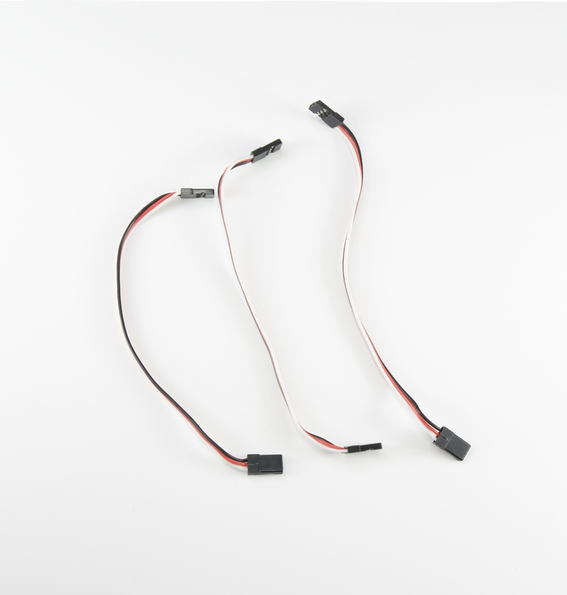 | RCケーブル3ピン オスプラグ ３本 ※GND：茶色 ツメなし |
１セット |
| 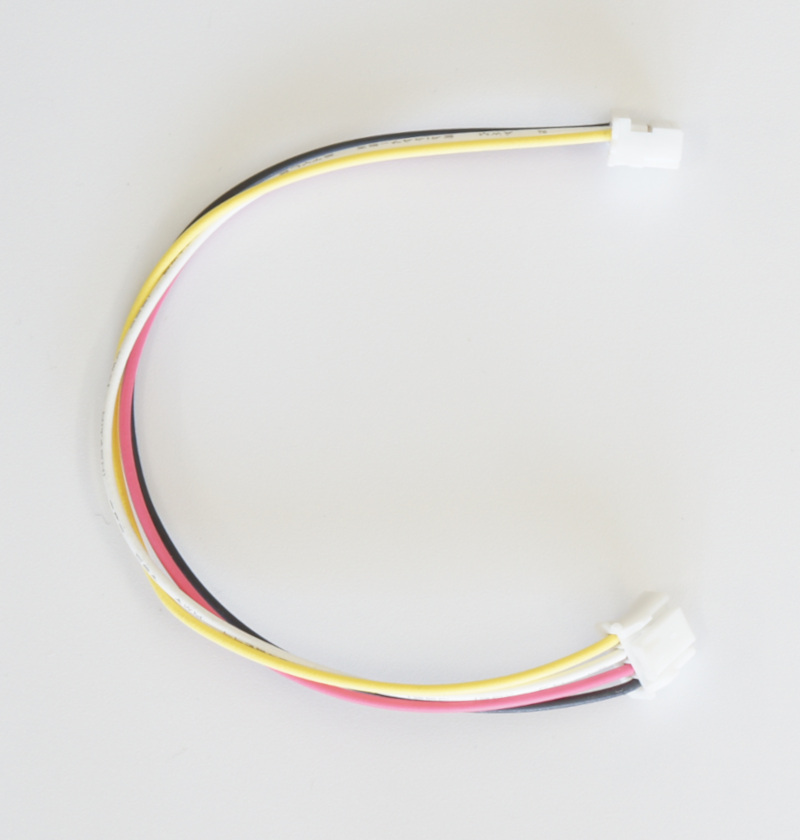 | FaBo 4ピンケーブル 長さ 10cm |
２本 |
| 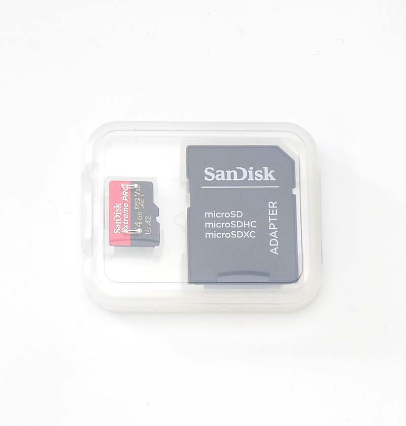 | マイクロSDカード(64GB),SDカードケース サンディスク エクストリームプロ ※Version1.0.0 |
１個 |
| 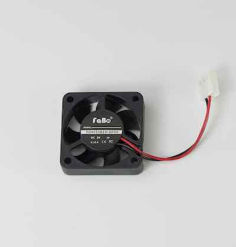 | DCファン FD401B1H-AP00 DC5V,0.16A | １個 |
 |
CPUファン取り付けジグ ※色が異なる場合がございます。 |
１個 |
  |
ファン固定ネジ M2.5×14・・・・4 ナットM2.5・・・・5(予備１) ※上（六角タイプ）または下（なべねじタイプ）の写真のものになります。 |
１袋 |
 |
六角棒レンチ 1.5 | １本 |
 |
両面テープ | ２枚 |
 |
プラスドライバー +2×100 | １本 |
 |
精密ドライバー P柄 | １本 |
 |
ナットドライバー 5.5 | １本 |
 |
精密ドライバーセット ED−20 | １セット |
 |
Jumperピン ※予備用 |
１個 |
 |
スパナ ８平スパナ |
１本 |
 |
結束バンド | ６本 |
| 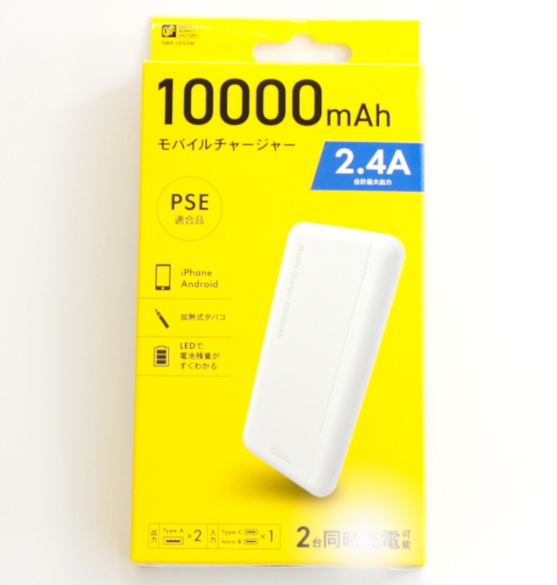 | モバイルバッテリー モバイルチャージャー10000 オーム電機 SMP-JV53W/05-1196 定格入力 DC5V/2.0A(Type-C/miro-B) 定格出力 DC5V/2.4V(Type-A*2ポート） 定格容量 DC5V/6300mAh 繰り返し充電回数 約500回 充電ケーブル micro-B 約15cm ※充電にはType-Cのケーブルを使用します。本キットには付属しませんのでお客様でご準備願います。 ※くわしい取り扱いに関しては取扱説明書をご覧ください。 |
１個 |
 |
単三アルカリ乾電池（プロポに使用） ※写真と異なる場合がございます。 |
4本 |
| 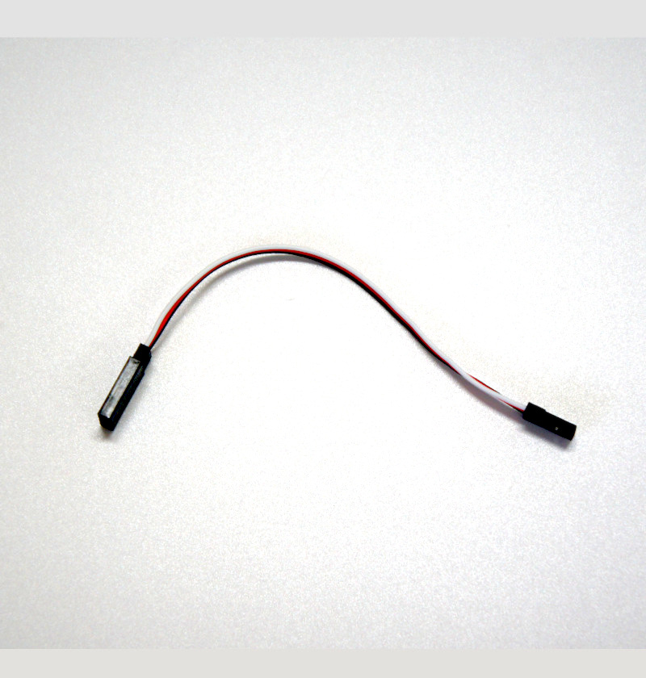 | 延長ケーブル１３０mm ※RCカー搭載のESC（TEU-105BK）の場合は、使用しません。 |
１本 |
| 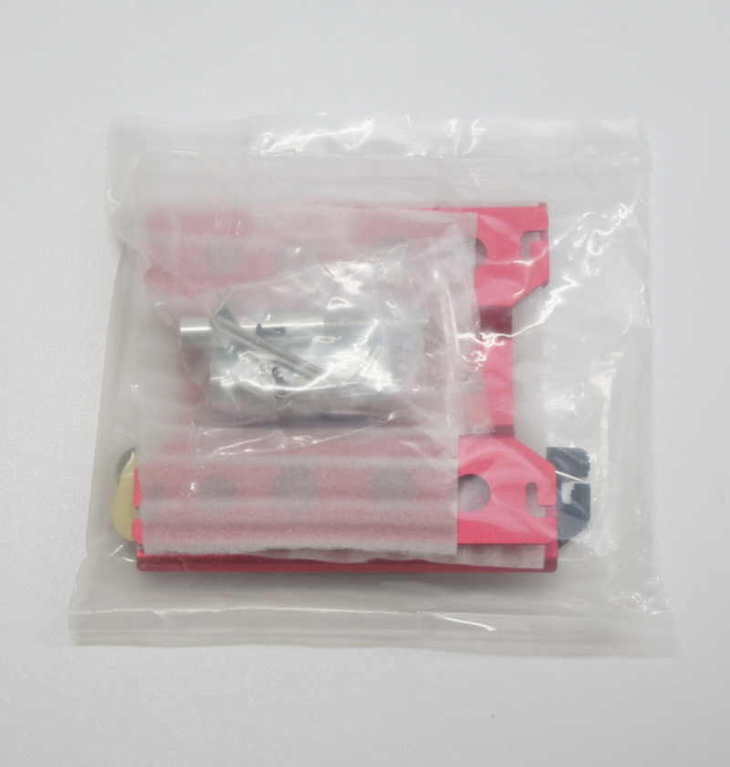 | 作業台 |
１台 |
※カッターナイフ、ニッパー等が必要となります。お客様でご準備お願いいたします。
※モバイルバッテリーの充電にはUSBタイプＣのケーブルと充電器が必要でございます。お客様でご準備ください。
※開封後はすぐ欠品がないかご確認お願いいたします。もし欠品がございましたら、こちらまでご連絡ください。 https://www.fabo.io/p/blog-page.html
※モバイルバッテリーの充電にはUSBタイプＣのケーブルと充電器が必要でございます。お客様でご準備ください。
※開封後はすぐ欠品がないかご確認お願いいたします。もし欠品がございましたら、こちらまでご連絡ください。 https://www.fabo.io/p/blog-page.html